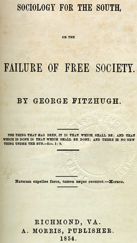

|
Defenses of slavery appeared in the American colonies nearly as early as the
establishment of the peculiar institution itself. Curiously, one of the first
lengthy and systematic proslavery tracts was published in Massachusetts, where
in 1701 John Saffin defended human bondage as consistent with Calvinist
theology. Although Northerners continued to write justifications for chattel
servitude through the time of the Civil War, the defense of slavery, like the
slave institution itself, became predominantly the interest of the South. By the
late antebellum years, the proslavery tract was the most characteristic
intellectual expression of the Southern states. Increasingly isolated within the
nation and the world, the slave South felt compelled to articulate ever more
elaborate vindications of its way of life in order to confront intensifying
political and ideological attack. The defense of slavery thus attained its
greatest sophistication and fullest expression in the last three decades before
the Civil War. Although it demonstrated remarkable consistency from the
seventeenth century on--and even continued to trace its origins to the Old
Testament, Aristotle, and St. Augustine--proslavery thought became in the South
of the 1830s an explicit and formalized ideology, seeking systematically to
enumerate all possible foundations for human bondage.
The intensification of proslavery argumentation in the 1830s was a change of
style and tone rather than of substance. Revolutionary idealism had led
Southerners temporarily to adopt an apologetic mien in regard to the
institution, but this hardly masked their failure to take decisive steps for its
abolition or transformation. As antislavery sentiment grew in the North after
the Missouri debates of 1818-1820, it was impossible any longer to disarm the
free states by conceding slavery's shortcomings. As Thomas Dew's pathbreaking
Review of the Debate in the Virginia Legislature (1832) made clear,
Southerners could straddle the issue no longer. It was time, he insisted, for
the South to acknowledge its commitment to its way of life and to come out
strongly in slavery's defense.
Dew's essay inaugurated what antebellum Southerners themselves, like many
historians after them, regarded as a new era in proslavery writings. Southerners
who had previously taken the peculiar institution for granted needed in these
newly perilous times to understand precisely why slavery was right and how its
justice could best be demonstrated. Proslavery tracts thus tended to be directed
less at the North, which now seemed beyond rational persuasion, than at
Southerners in need of deepened understanding of the assumptions that underlay
their civilization. Some modern scholars have argued that this essentially
internal purpose for proslavery writings identifies the apologies as a means of
dealing with the South's deep-seated guilt about its peculiar institution. But
it is difficult to find the explicit introspective statements of remorse that
would support such an interpretation. Slavery's defenders might criticize
specific aspects of the system, acknowledging, for example, that cruel and
oppressive masters did exist. But the essayists insisted that these failures
were simply idiosyncrasies within an overwhelmingly benevolent system.

A poster advertising a reward for the return of runaway slaves
|
Unsympathetic to the perfectionism embraced by many abolitionists, proslavery
advocates recognized evils in slavery, as they were sure they would in any
terrestrial system of society and government. All earthly arrangements, they
believed, necessarily required men to cope as best they could with sin; it was
the relative merits of social systems, their comparative success in dealing with
inherent evil, that was relevant. But as the slavery controversy intensified,
apologists tended to concentrate more exclusively on the positive aspects of the
system.
The pragmatic tone of Dew's 1832 effort served as the inspiration for the
inductive mode of almost all proslavery tracts thereafter. Rejecting the
deductive principles of the Lockean contractual social theory that had
influenced the Founding Fathers, Dew embraced the conservative organic view of
social order that had been implicit in proslavery philosophy since its
Aristotelian beginnings. Social institutions and arrangements evolved slowly
over time, Dew insisted, and could not be beneficially altered by abrupt human
intervention. Like the proslavery advocates who followed him, Dew called upon
his readers to study society as it had existed through the ages and to derive
social principles from these empirical observations. Theoretical notions of
equality could not controvert the striking differences in men's capacities
evident to any impartial observer. Idealized conceptions of justice--such as
those of the abolitionists--could never serve as reliable bases for social
organization.
Although Dew launched a new era in proslavery thinking, Southerners followed
with significant numbers of similar tracts only after Northern abolitionists
inundated the South with antislavery propaganda sent through the federal mails
in 1835. In the next two and a half decades, nearly every Southerner of
intellectual status or pretensions wrote a defense of human bondage, and the
roster of slavery's apologists came to include individuals of such prominence as
novelist William Gilmore Simms, college professors George Frederick Holmes and
Nathaniel Beverley Tucker, and public figures William Harper, James D. B. De
Bow, Edmund Ruffin, and James Henry Hammond.
The proslavery advocates, in their collective oeuvre, developed a
comprehensive defense of the peculiar institution that invoked the most
important sources of authority in their intellectual culture and associated
slavery with the fundamental values of their civilization. Modern scholars have
thus regarded proslavery thought chiefly as an index to the mind of the white
South, and not as a source of information about slavery itself. Interpretations
of proslavery argument have reflected differing understandings of prewar white
Southern society, and historians have variously characterized the argument, like
the Old South, as premodern or forward-looking, as fundamentally based either in
hierarchical class assumptions or, by contrast, in the racial tenets of
herrenvolk democracy and the guilt of would-be American egalitarianism.
Beneath these historiographical differences, however, lies the shared notion
that proslavery thought is a key to the essence of antebellum Southern society
and culture.
A striking commonality in almost all Southern defenses of slavery is the
effort of their authors to demonstrate that their arguments were consistent with
wider systems of legitimation current in Western thought. Southerners hoped in
the proslavery argument to provide the foundation for overcoming their growing
intellectual isolation--and seeming aberration. The Bible served as the core of
this defense. In the face of abolitionist claims that slavery violated the
principles of Christianity, Southerners demonstrated with ever more elaborate
detail that both the Old and the New Testament sanctioned human bondage. God's
Chosen People had been slaveholders; Christ had made no attack on the
institution; and his disciple Paul had been its active supporter.
|

George Fitzhugh's Sociology for the South
was the single most influential defense of slavery written in the
antebellum era.
|
But for an age increasingly enamored of natural science, biblical guidance
was not enough. The accepted foundations for truth were changing in European and
American thought, as intellectuals sought to apply the rigor of science to the
study of society and morality, as well as of the natural world. The proslavery
argument accordingly called not only upon divine revelation, the traditional
source and arbiter of truth, but also sought to embrace the positivistic
standards increasingly accepted for assessment of all social problems. Man could
and must, these authors contended, determine his social and moral duties
scientifically, through examination of God's will revealed in nature and
history, A subspecies of general social thought, the defense of slavery assumed
the methods and arguments of broader social theories and reflected an
intellectual perspective that in these years first began to regard "social
science" as a discrete and legitimate domain of human learning. Reverend
Thornton Stringfellow would devise a proslavery theory meant to be at once
"Scriptural and Statistical"; George Fitzhugh would write a Sociology for the
South; Henry Hughes's proslavery tract would appear in the guise of a
Treatise on Sociology. But most advocates did not go so far. Sociology
was not yet the academic discipline it has since become; moral science--from
which sociology would later emerge--still remained the central framework for
social analysis both North and South. Thus the mainstream of the proslavery
argument endeavored to embed the peculiar institution within nineteenth-century
moral philosophy, with its emphases on man's duties and its invocation of
historical precedent as guide for future action.
From the time of Greece and Rome, slavery's defenders argued, human bondage
had produced the world's greatest civilizations. The peculiar institution, they
insisted, was not so very peculiar. In fact, the experience of the ages showed
the fundamental principles of the American Revolution to be sadly misguided. Men
had not been created equal and free, as Jefferson had asserted. Nature produced
individuals strikingly unequal in both attributes and circumstances.
"Scientific" truth thus prescribed a hierarchically structured society
reproducing nature's orderly differentiations. Social organicism replaced
concepts of natural law; the prestige of modern science served to legitimate
tradition and conservatism in a manner that held implications far wider than the
bounds of the slavery controversy.
Such an approach to social order stressed the importance of man's duties
rather than his rights. And, for rhetorical purposes, it was often the duties of
masters, rather than those of slaves, that apologists chose to emphasize. Within
the organic community of slave society, they argued, the master could not ignore
the obligation to care for his bondsman. The slave was better off, apologists
claimed, than the Northern factory worker whose employer had no interest in his
health or even his survival. Northern laborers had liberty only to starve. Every
civilization needed what James Hammond dubbed a "mud-sill" class to do the
menial labor of society. The Southern system of human bondage, proslavery tracts
insisted, simply organized this interdependence and inequality in accordance
with principles of morality and Christianity.
The humanitarian arrangements of slavery, the Southerners proclaimed,
contrasted favorably with the avaricious materialism of the supposedly "free"
society of the North. The proslavery argument asserted its opposition to the
growing materialism of the age and offered the model of evangelical stewardship
as the best representation of its labor system. The master was God's surrogate
on earth; the South institutionalized the Christian duties of charity in the
master and humility in the slave. The nineteenth century's concern with
philanthropy, defenders of slavery argued, was most successfully realized in the
South's system of human bondage. The truths of science, religion, and history
united to offer proslavery Southerners ready support for their position.
But by the 1850s, challenges to the unity of proslavery ideology had begun to
appear. In large part, these emerging rifts mirrored wider intellectual
currents. Forms of knowledge and legitimation long assumed to be necessarily
compatible were everywhere displaying disquieting contradictions. Most
significant was an increasingly unavoidable conflict between the claims of
science and those of the Scriptures. Rather than supporting the truths of
biblical revelation, science seemed to many mid-century thinkers already a
threat to the conclusions of other modes of knowledge.
But in the proslavery argument, as in patterns of American thought more
generally, these inconsistencies were still largely dormant. Southerners
defending slavery attempted to minimize the impact of philosophical
contradictions in order to maintain the strength that derived from proslavery
unity. By the end of the antebellum period, however, even those recognizing the
necessity for consistency sometimes found it difficult to make their own views
conform to the moral and philosophical mainstream of proslavery thought. The
emergence of ethnology by the late 1840s as a recognized science of racial
differences was to pose inevitable difficulties for the fundamentalist bases on
which the proslavery movement had been built. On the other hand, scientific
validation of black inferiority offered an alluring support to those favoring
the social subordination of blacks in slavery. Yet theories that urged the
existence of two permanently unequal and separate races of men challenged
Genesis and its assertion that all humans were descended from a single set of
common parents.
The dilemma implicit in this conflict of knowledge and values was neatly
illustrated in the experience of Josiah Nott. A physician and a leading
spokesman for racial science, he was anxious to de-emphasize challenges to
religious orthodoxy, yet unable to contain his contempt for the clergy, whom he
viewed as purveyors of false doctrines. While Nott proclaimed his devotion to
revelation, he mercilessly attacked its clerical interpreters. Science and
religion were consistent, he maintained, but ministers were clearly fallible and
in challenging science misinterpreted the divine word.For the most part, Nott's
audience did not perceive his subtle distinction between anticlericalism and
anti-religionism. Nott provoked violent controversy, and clerical defenders of
slavery moved to affirm the unity of the human race and of proslavery ideology
by disproving his polygenist theories.
Many defenders of slavery, however, were happy to call upon the scientific
prestige of ethnology while ignoring the logical difficulties it presented.
Racial arguments had been a part of proslavery thought since its earliest
manifestations in the colonial period. The impact of ethnology was chiefly to
enlarge and systematize this facet of the argument and to offer a variety of
skull measurements and geological and anthropological "facts" as
incontrovertible evidence for the mainstream position. Nature was invoked to
provide additional support for the moral justifications that remained the core
of the proslavery argument.
Perhaps the source of greatest controversy within the Southern proslavery
movement, however, was George Fitzhugh. The only Southerner vigorously to
advocate slavery as the most desirable arrangement for white as well as black
labor and the only apologist to transform the discussion of slavery into an
attack on capital, Fitzhugh thoroughly enjoyed the intellectual notoriety his
extremism won him. He stood largely apart from the effort of the mainstream
proslavery argument to associate itself with basic values of Western
civilization, and he was frequently criticized by other southern apologists. Yet
Eugene Genovese has argued that Fitzhugh's ideas were a "logical outcome" of
notions left unexplored in the more moderate proslavery tracts. Because Fitzhugh
was extreme, he was able to articulate the unspoken--even
unrecognized--assumptions on which proslavery rested, and, in Genovese's view,
to confront the South with the inconsistencies inherent in maintaining a
pre-bourgeois labor system in a capitalist world cotton market and an
increasingly modern nation. The paradoxes that the proslavery argument
encountered and unwittingly exposed--conflicts of tradition and modernity, of
human and material values, of science and religion--are but further evidence of
the argument's relevance not just to the South, but to nineteenth-century
American intellectual and social history more generally.
Source: Randall M. Miller and John David Smith, eds. Dictionary of
Afro-American Slavery (Westport, CT: Praeger, 1997), 597-602.
|